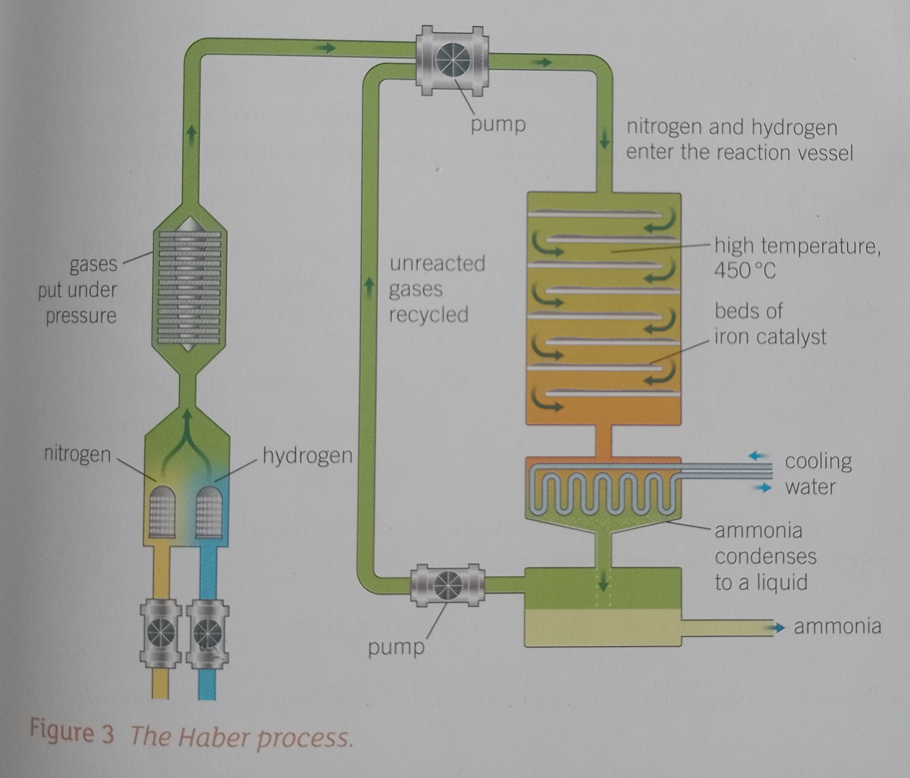

Equation
N₂(g) + 3H₂(g) <=> 2NH₃(g)
-93kJ/mol
Process
- Nitrogen and hydrogen goes under pressure
- Gas enters reaction vessel (450 degrees with beds of catalyst)
- Water cooled to condense ammonia to liquid
- Unreacted gas recycled
 The yield is around 97%